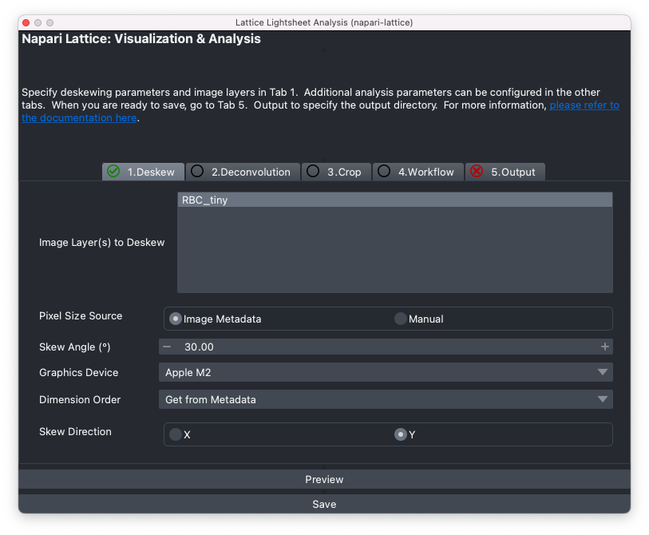

napari-lattice


This napari plugin allows deskewing, cropping, visualisation and designing custom analysis pipelines for lattice lightsheet data, particularly from the Zeiss Lattice Lightsheet. The plugin has also been optimized to run in headless mode.
Documentation
Check the Wiki page for documentation on how to get started.

Functions
- Deskewing and deconvolution of Zeiss lattice lightsheet images
- Ability to preview deskewed image at channel or timepoint of interest
- Crop and process only a small portion of the image
- Import ImageJ ROIs for cropping
- Create image processing workflows using napari-workflows
- Run deskewing, deconvolution and custom image processing workflows from the terminal
- Files can be saved as h5 (BigDataViewer/BigStitcher) or tiff files
- Run in terminal without napari, enabling processing workflows on the HPC
Key Features
Apply custom image processing workflows using napari-workflows.
- Interactive workflow generation (no coding experience needed)
- Use custom python functions/modules within workflows
- How to use Cellpose for cell segmentation
Support will be added for more file formats in the future.
Sample lattice lightsheet data download: https://doi.org/10.5281/zenodo.7117784
This napari plugin was generated with Cookiecutter using @napari's cookiecutter-napari-plugin template.
Contributing
Contributions are very welcome. Please refer to the Development docs to get started.
License
Distributed under the terms of the [GPL-3.0 License] license, "napari_lattice" is free and open source software
Acknowledgment
This project was supported by funding from the Rogers Lab at the Centre for Dynamic Imaging at the Walter and Eliza Hall Institute of Medical Research. This project has been made possible in part by Napari plugin accelerator grant from the Chan Zuckerberg Initiative DAF, an advised fund of the Silicon Valley Community Foundation.
Thanks to the developers and maintainers of the amazing open-source plugins such as pyclesperanto, aicsimageio, dask and pycudadecon. Thanks in particular to the developers of open source projects: LLSpy and lls_dd as they were referred to extensively for developing napari-lattice. Thanks to the imagesc forum!
Issues
If you encounter any problems, please file an issue along with a detailed description.